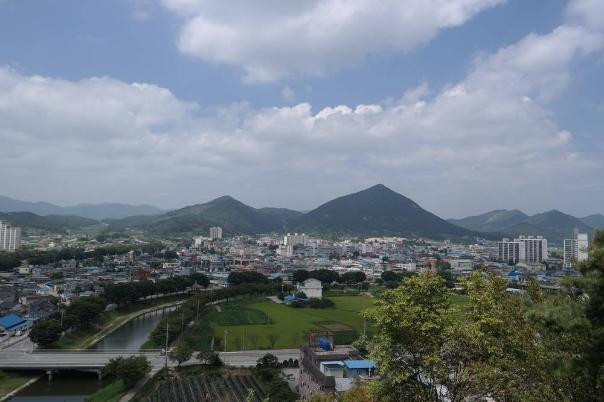

순창군, 공유재산 부지에 햇빛소득마을 100곳 만든다…전북개발공사·한전과 공공주도형 발전 협약

2030년까지 5년간 부지 함께 발굴, 개발공사가 투자·건설·운영…12월 조례 제정, 내년 1월 주민설명회
전북 순창군이 군 소유 공유재산에 태양광 발전소를 짓고 그 수익을 주민에게 돌려주는 햇빛소득마을 100곳 조성에 나선다. 군은 10일 군청에서 전북개발공사, 한국전력공사 순창지사와 공공주도형 재생에너지 발전사업 업무협약을 맺고, 2026년부터 2030년까지 5년 동안 발전이 가능한 공유재산 부지를 함께 찾아 단계적으로 사업을 벌이기로 했다. 역할은 나뉜다. 군은 부지 제공과 인허가 지원, 수익 환원 제도 마련과 주민 의견 수렴을 맡고, 전북개발공사는 사업성 검토와 투자, 발전소 건설·운영을, 한전 순창지사는 계통 연계와 송·배전망 보강을 지원한다. 군은 12월 '햇빛소득마을 조성 및 운영 조례'를 만들고, 내년 1월 읍·면 군정설명회에 맞춰 주민설명회를 연 뒤 대상지를 골라 시범사업에 들어간다. 최영일 군수는 농어촌 기본소득이 생활의 바탕이라면 햇빛소득은 지역 자원으로 새 소득을 만드는 성장 기반이라고 설명했다.
시민에너지 관점
공유재산과 공기업 자본, 한전의 계통 지원을 한 협약에 묶은 것은 마을이 혼자 감당하기 어려운 부지·자금·접속 문제를 처음부터 공공이 풀겠다는 뜻이어서 의미가 크다. 다만 전국 햇빛소득마을 436곳 가운데 바로 시작할 수 있는 곳이 23곳뿐이라는 최근 점검처럼, 계통 접속이 막히면 100곳 목표도 숫자에 그친다. 덴마크·독일의 공공 주도 사업이 오래 가는 이유는 주민이 지분과 결정권을 실제로 갖기 때문이다. 12월 조례에는 발전소 지분 일부를 마을이 소유하는 구조와 수익 배분 기준을 분명히 담고, 주민설명회는 설명이 아니라 마을이 사업을 고르는 자리가 되어야 한다.
출처: 노컷뉴스 2026-11-11 남승현(전북CBS) 원문 보기
淳昌郡、公有財産の用地に「太陽光所得村」100カ所…全北開発公社・韓電と公共主導型発電で協約
2030年までの5年間で用地を共同発掘、開発公社が投資・建設・運営…12月に条例制定、来年1月に住民説明会
全羅北道淳昌郡が、郡所有の公有財産に太陽光発電所を建て、その収益を住民に還元する「太陽光所得村（ヘッピッ所得村）」100カ所の整備に乗り出す。郡は10日、郡庁で全北開発公社、韓国電力公社淳昌支社と公共主導型再生可能エネルギー発電事業の業務協約を結び、2026年から2030年までの5年間、発電が可能な公有財産の用地を共同で探し、段階的に事業を進めることにした。役割は分担する。郡は用地の提供と許認可の支援、収益還元の制度づくりと住民の意見集約を担い、全北開発公社は事業性の検討と投資、発電所の建設・運営を、韓電淳昌支社は系統連系と送配電網の補強を支援する。郡は12月に「太陽光所得村の造成及び運営に関する条例」を制定し、来年1月に邑・面ごとの郡政説明会に合わせて住民説明会を開いたうえで、対象地を選んでモデル事業に入る。崔永一（チェ・ヨンイル）郡守は、農漁村基本所得が生活の土台なら、太陽光所得は地域資源で新たな所得を生む成長基盤だと説明した。
市民エネルギーの視点
公有財産と公企業の資本、韓電の系統支援を一つの協約にまとめたことは、村だけでは担いきれない用地・資金・接続の問題を最初から公共が解決するという意思の表れであり、意義は大きい。ただ、全国の太陽光所得村436カ所のうちすぐに着手できるのは23カ所にとどまるという最近の点検のように、系統接続が詰まれば100カ所の目標も数字だけに終わる。デンマークやドイツの公共主導事業が長続きするのは、住民が実際に持分と決定権を持つからだ。12月の条例には発電所の持分の一部を村が所有する仕組みと収益配分の基準を明記し、住民説明会は説明の場ではなく、村が事業を選ぶ場にすべきだ。
出典: 노컷뉴스 2026-11-11 남승현(전북CBS) 原文を読む
淳昌郡将在公有地上建设100个“阳光收入村”，与全北开发公社、韩电签署公共主导型发电协议
到2030年的5年间共同寻找用地，开发公社负责投资、建设和运营；12月制定条例，明年1月召开居民说明会
韩国全罗北道淳昌郡将在郡有公有财产上建设太阳能电站，并把收益返还给居民，计划建成100个“阳光收入村”。该郡10日在郡厅与全北开发公社、韩国电力公社淳昌支社签署公共主导型可再生能源发电项目业务协议，决定在2026年至2030年的5年间共同寻找可用于发电的公有财产用地，分阶段推进项目。三方分工明确：郡政府负责提供用地、协助审批、建立收益返还制度并收集居民意见；全北开发公社负责项目可行性评估、投资以及电站建设和运营；韩电淳昌支社负责并网与输配电网扩容。该郡将于12月制定《阳光收入村建设及运营条例》，明年1月结合各邑、面郡政说明会召开居民说明会，随后选定对象地块启动试点项目。郡守崔永一表示，如果说农渔村基本收入是生活的基础，那么阳光收入就是利用地方资源创造新收入的增长基础。
市民能源视角
把公有财产、公营企业资本和韩电的电网支持放进同一份协议，意味着公共部门从一开始就承担起村庄难以独自解决的用地、资金和并网问题，意义重大。但正如近期检查显示全国436个阳光收入村中能立即开工的只有23个，一旦并网受阻，100个的目标也只会停留在数字上。丹麦和德国的公共主导项目之所以长久，是因为居民真正拥有股份和决策权。12月的条例应明确规定由村庄持有电站部分股份的结构和收益分配标准，居民说明会也不应只是单向说明，而应成为村庄自己选择项目的场合。
来源: 노컷뉴스 2026-11-11 남승현(전북CBS) 查看原文
Sunchang Plans 100 Sunlight Income Villages on County Land in Public-Led Solar Pact with Provincial Developer and KEPCO
Partners will find sites together over five years to 2030, with the developer investing, building and operating; an ordinance is due in December and resident briefings in January
Sunchang County in North Jeolla Province will build solar plants on county-owned land and return the income to residents, aiming to create 100 "sunlight income villages." On November 10 the county signed an agreement at its office with Jeonbuk Development Corporation and the Sunchang branch of Korea Electric Power Corporation (KEPCO) to jointly identify suitable public sites over five years from 2026 to 2030 and develop them in stages. The county will provide land, help with permits, design rules for returning income and gather residents' views; the development corporation will assess viability, invest, and build and operate the plants; and the KEPCO branch will handle grid connection and reinforcement of transmission and distribution lines. The county plans to pass an ordinance on the villages in December, hold resident briefings alongside its township-level policy sessions in January, and then select sites for pilot projects. County head Choi Young-il said basic rural income provides a floor for daily life, while sunlight income is a growth base that turns local resources into new earnings.
Citizen Energy View
Bundling public land, a public company's capital and KEPCO's grid support in one agreement means the public sector is taking on, from the start, the land, money and connection problems that villages cannot solve alone. That matters. But as a recent review found that only 23 of the 436 sunlight income villages selected nationwide can start right away, a target of 100 stays a number if grid access is blocked. Public-led projects in Denmark and Germany last because residents actually hold shares and decision-making power. December's ordinance should spell out village ownership of part of each plant and clear rules for sharing income, and the January briefings should be where villages choose projects, not just hear about them.
Source: 노컷뉴스 2026-11-11 남승현(전북CBS) Read the original